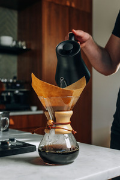

A Guide to Coffee Brewing
Six ways to get from bean to cup
Every brewing method is really just a set of answers to the same three questions: how fine is the grind, how long does the water stay in contact with it, and how much pressure is involved. Change one of those and you change the cup. A French press steeps coarse grounds for minutes with no pressure at all and gives you something heavy and round. An espresso machine forces water through a fine puck in under thirty seconds and gives you something concentrated and sharp. Neither is more correct than the other, they are just different points on the same three dials.

The pour over sits in the middle of that range and is the method most worth learning first, because it makes your mistakes obvious. Pour too fast and the water runs straight through, leaving a thin, sour cup. Grind too fine and the water stalls in the filter, pulling out the bitter compounds you wanted to leave behind. Once you cantaste the difference between those two failures, every other method starts to make sense, because you are adjusting the same variables in a different order.
Brewing Methods Compared
| Method | Grind Size | Coffee to Water | Brew Time |
|---|---|---|---|
| French Press | Coarse | 1:12 | 4 minutes |
| Pour Over | Medium | 1:16 | 3 minutes |
| AeroPress | Medium Fine | 1:14 | 90 seconds |
| Moka Pot | Fine | 1:10 | 5 minutes |
| Espresso | Very Fine | 1:2 | 28 seconds |
| Cold Brew | Extra Coarse | 1:8 | 16 hours |
The ratios above are starting points, not rules. Weigh your coffee and your water the first few times so you know what your baseline actually tastes like, then adjust from there. If the cup tastes sour and thin, the water did not pull enough out, so go finer or brew longer. If it tastes bitter and drying, it pulled too much, so go coarser or cut the time. Almost every bad cup of coffee is one of those two problems.